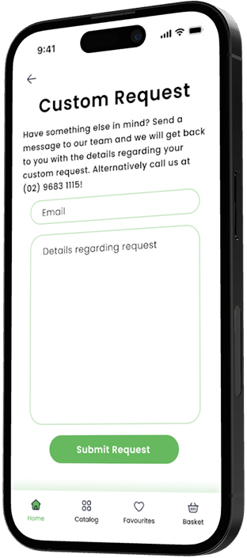
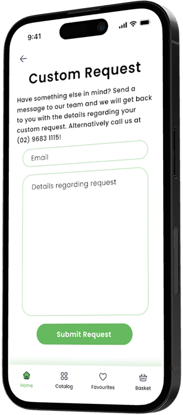

Goal 1
Simplify the flower shopping experience through an intuitive and effortless app design.
September 2025 — October 2025

.png) 

Petal Pop is a modern flower shopping and arrangement app that reimagines how users discover, design, and purchase floral creations. Built with a soft gradient UI, intuitive flow, and elegant aesthetics, Petal Pop combines the artistry of floristry with the simplicity of digital shopping.
The app allows users to browse curated collections and design their own bouquet, with seamless checkout and delivery tracking. PetalPop’s interface emphasizes visual appeal and emotional connection, helping users express love, celebration, or gratitude through flowers that reflect their style.
Simplify the flower shopping experience through an intuitive and effortless app design.
Empower users to express emotion and creativity through custom floral arrangements.
Deliver a visually delightful and emotionally engaging checkout experience.
Visualizing the emotional and functional flow of a user’s experience with Petal Pop — from discovering flowers to completing their purchase.
Many users struggle to find personalisd meaningful floral gifts due to confusing interfaces and limited creative options.
Petal Pop is a modern user friendly shopping app designed to make buying flowers fast, simple, and enjoyable. The app allows users to browse a beautiful range of bouquets, save their favorites, and order them instantly, all with a few taps. Alternatively users are also able to customise their very own flower bouquet and arrangements.
Drawing the paper wireframes for the app, I prioritised which functions would provide the most value to users. For the home screen, I explored multiple layouts to offer different ways to browse and shop quickly.


I overall decided to keep the searchbar as a standalone element. I placed buttons for the main navigation for easy shopping.
I conducted two rounds of usability studies. Below are the key findings.
Users were unsure how much the “Rotate” and “Zoom” button rotated or zoomed in for.
Users reported there was no account feature so they could not save their ‘favourites’.
Users wanted to order flowers quickly.
Having a favourites button directly next to the product rather than having to click into the product.
Options to create custom arrangements rather than just picking preselected ones.
Banners and buttons should have a clear difference.
Customers wanted to order fast, so I added a ‘Shop Now’ button combined with a Hero Image. After the usability studies I added vibrant colours, an account feature and an instant save feature. I am thinking about adding drop shadows to make the images less flat.
From the usability study the rotate and zoom button were unclear to use. Pinch to zoom is also an option I could have used. I also added a customise button to add/change arrangements. In future designs I may want to add what the arrangement includes to give users a more transparent purchase.
Illustrations and icons to help users better understand designs.
Followed color contrast accessibility standards for buttons and written content.
Interactive elements such as buttons, cards, and icons are designed with adequate spacing and minimum touch sizes.

The Petal Pop app empowers users to feel confident buying flowers online with complete transparency.
I learnt that design comes from continuous user research and figuring out pieces of the puzzles. Each iteration revealed new ways users interacted with the app. It taught me that user research is not a one-time step but an ongoing conversation.
“Being able to save my favorite bouquets is such a nice touch. It makes future shopping way faster.”
I have to make sure to obey WCAG standards! I realised designing with accessibility in mind should be built into every design decision I make and not just added after testing around.
If I could redo this project I would want to prototype more design reiterations — exploring a wider range of colour palettes, typography, layout, better use of whitespace, drop shadows, and different interaction methods such as a dropdown or navigation bar. This would allow me to uncover more innovative and visually appealing design solutions.
While I focused a lot on Petal Pop's look and functionality, next time I would pay more attention to the emotional experience. Asking questions like “How would the user feel about this design?” helps create a memorable experience rather than just clicking buttons on a screen.
I think my biggest mistake when creating this project was not going in-depth enough in user research. I could have conducted more research on competitors, trends, and users, which would have led to more confidence in the original wireframes. Furthermore, I primarily relied on secondary sources such as local flower sites and online articles. I needed to focus more on primary sources like field studies, user interviews, surveys, and questionnaires to better understand how people buy and choose flowers in real life.